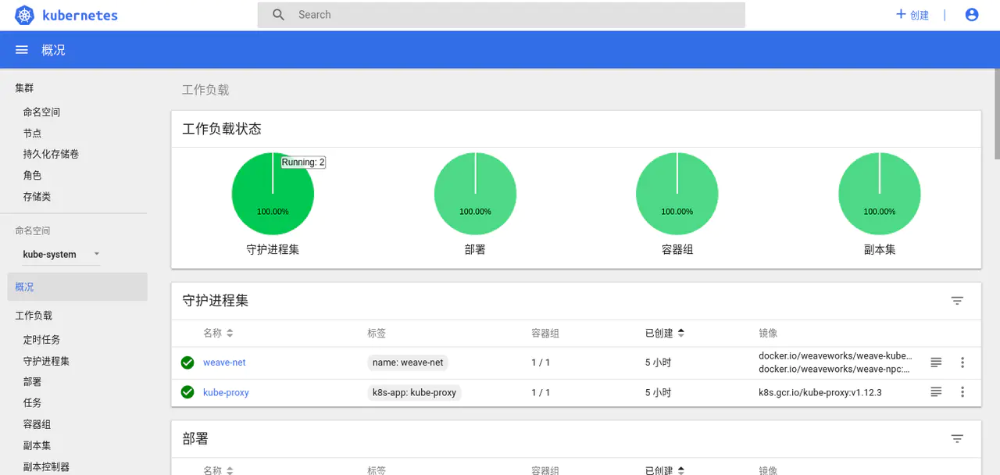
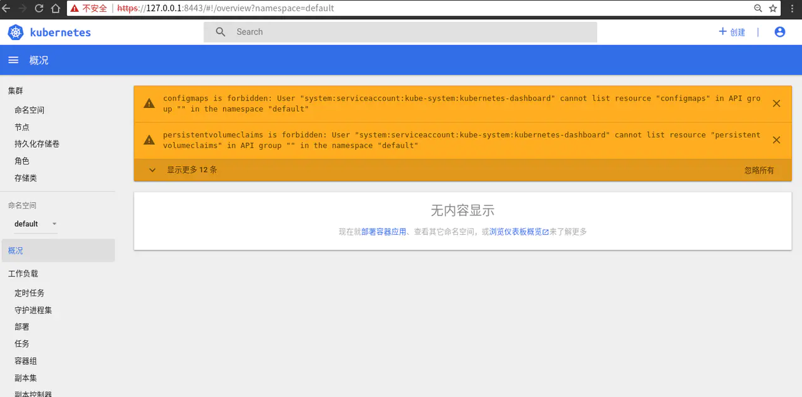
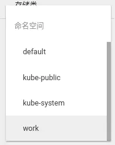
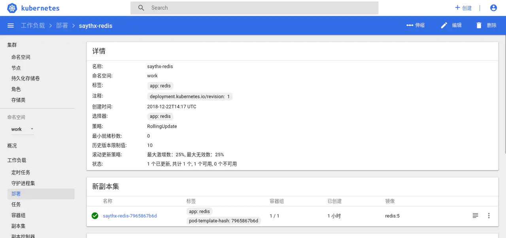
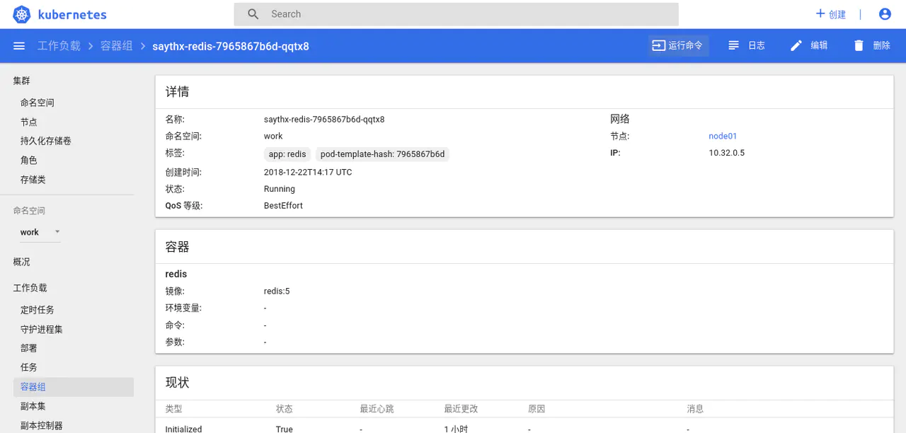

- 01 开篇： Kubernetes 是什么以及为什么需要它.md.html
- 02 初步认识：Kubernetes 基础概念.md.html
- 03 宏观认识：整体架构.md.html
- 04 搭建 Kubernetes 集群 - 本地快速搭建.md.html
- 05 动手实践：搭建一个 Kubernetes 集群 - 生产可用.md.html
- 06 集群管理：初识 kubectl.md.html
- 07 集群管理：以 Redis 为例-部署及访问.md.html
- 08 安全重点 认证和授权.md.html
- 09 应用发布：部署实际项目.md.html
- 10 应用管理：初识 Helm.md.html
- 11 部署实践：以 Helm 部署项目.md.html
- 12 庖丁解牛：kube-apiserver.md.html
- 13 庖丁解牛：etcd.md.html
- 14 庖丁解牛：controller-manager.md.html
- 15 庖丁解牛：kube-scheduler.md.html
- 16 庖丁解牛：kubelet.md.html
- 17 庖丁解牛：kube-proxy.md.html
- 18 庖丁解牛：Container Runtime （Docker）.md.html
- 19 Troubleshoot.md.html
- 20 扩展增强：Dashboard.md.html
- 21 扩展增强：CoreDNS.md.html
- 22 服务增强：Ingress.md.html
- 23 监控实践：对 K8S 集群进行监控.md.html
- 24 总结.md.html
- 捐赠
20 扩展增强：Dashboard
整体概览
通过前面的介绍，想必你已经迫不及待的想要将应用部署至 K8S 中，但总是使用 kubectl 或者 Helm 等命令行工具也许不太直观，你可能想要一眼就看到集群当前的状态，或者想要更方便的对集群进行管理。
本节将介绍一个 Web 项目 Dashboard 可用于部署容器化的应用程序，管理集群中的资源，甚至是排查和解决问题。
当然它和大多数 Dashboard 类的项目类似，也为集群的状态提供了一个很直观的展示。

如何安装
要想使用 Dashboard，首先我们需要安装它，而 Dashboard 的安装其实也很简单。不过对于国内用户需要注意的是需要解决网络问题，或替换镜像地址等。
这里我们安装当前最新版 v1.10.1 的 Dashboard：
- 对于已经解决网络问题的用户：
可使用官方推荐做法进行安装，以下链接是使用了我提交了 path 的版本，由于官方最近的一次更新导致配置文件中的镜像搞错了。
master $ kubectl apply -f https://raw.githubusercontent.com/tao12345666333/dashboard/67970554aa9275cccec1d1ee5fbf89ae81b3b614/aio/deploy/recommended/kubernetes-dashboard.yaml
secret/kubernetes-dashboard-certs created
serviceaccount/kubernetes-dashboard created
role.rbac.authorization.k8s.io/kubernetes-dashboard-minimal created
rolebinding.rbac.authorization.k8s.io/kubernetes-dashboard-minimal created
deployment.apps/kubernetes-dashboard created
service/kubernetes-dashboard created
master $ kubectl apply -f https://gitee.com/K8S-release/k8s-dashboard/raw/master/kubernetes-dashboard.yaml
secret/kubernetes-dashboard-certs created
serviceaccount/kubernetes-dashboard created
role.rbac.authorization.k8s.io/kubernetes-dashboard-minimal created
rolebinding.rbac.authorization.k8s.io/kubernetes-dashboard-minimal created
deployment.apps/kubernetes-dashboard created
service/kubernetes-dashboard created
当已经执行完以上步骤后，可检查下是否安装成功：
master $ kubectl -n kube-system get all -l k8s-app=kubernetes-dashboard
NAME READY STATUS RESTARTS AGE
pod/kubernetes-dashboard-67896bc598-dhdpz 1/1 Running 0 3m
NAME TYPE CLUSTER-IP EXTERNAL-IP PORT(S) AGE
service/kubernetes-dashboard ClusterIP 10.109.92.207 <none> 443/TCP 3m
NAME DESIRED CURRENT UP-TO-DATE AVAILABLE AGE
deployment.apps/kubernetes-dashboard 1 1 1 1 3m
NAME DESIRED CURRENT READY AGE
replicaset.apps/kubernetes-dashboard-67896bc598 1 1 1 3m
可以看到 Pod 已经在正常运行，接下来便是访问 Dashboard.
访问 Dashboard
以当前的部署方式，Service 使用了 ClusterIP 的类型，所以在集群外不能直接访问。我们先使用 kubectl 提供的 port-forward 功能进行访问。
master $ kubectl -n kube-system port-forward pod/kubernetes-dashboard-67896bc598-dhdpz 8443
Forwarding from 127.0.0.1:8443 -> 8443
Forwarding from [::1]:8443 -> 8443
还记得，我们在第 5 节时候安装过一个名为 socat 的依赖项吗？ socat 的主要功能便是端口转发。
现在在浏览器打开 https://127.0.0.1:8443 便可看到如下的登录界面。
对于我们的 新版本 而言，我们 使用令牌登录 的方式。
查找 Token
master $ kubectl -n kube-system get serviceaccount -l k8s-app=kubernetes-dashboard -o yaml
apiVersion: v1
items:
- apiVersion: v1
kind: ServiceAccount
metadata:
annotations:
kubectl.kubernetes.io/last-applied-configuration: |
{"apiVersion":"v1","kind":"ServiceAccount","metadata":{"annotations":{},"labels":{"k8s-app":"kubernetes-dashboard"},"name":"kubernetes-dashboard","namespace":"kube-system"}}
creationTimestamp: 2018-12-20T17:27:14Z
labels:
k8s-app: kubernetes-dashboard
name: kubernetes-dashboard
namespace: kube-system
resourceVersion: "1400"
selfLink: /api/v1/namespaces/kube-system/serviceaccounts/kubernetes-dashboard
uid: 7e01ddda-047c-11e9-b55c-0242ac11002a
secrets:
- name: kubernetes-dashboard-token-6ck2l
kind: List
metadata:
resourceVersion: ""
selfLink: ""
首先，我们查看刚才创建出的 serviceaccount 可以看到其中有配置 secrets 。
查看该 secret 详情获得 Token
master $ kubectl -n kube-system describe secrets kubernetes-dashboard-token-6ck2l
Name: kubernetes-dashboard-token-6ck2l
Namespace: kube-system
Labels: <none>
Annotations: kubernetes.io/service-account.name=kubernetes-dashboard
kubernetes.io/service-account.uid=7e01ddda-047c-11e9-b55c-0242ac11002a
Type: kubernetes.io/service-account-token
Data
====
ca.crt: 1025 bytes
namespace: 11 bytes
token: eyJhbGciOiJSUzI1NiIsImtpZCI6IiJ9.eyJpc3MiOiJrdWJlcm5ldGVzL3NlcnZpY2VhY2NvdW50Iiwia3ViZXJuZXRlcy5pby9zZXJ2aWNlYWNjb3VudC9uYW1lc3BhY2UiOiJrdWJlLXN5c3RlbSIsImt1YmVybmV0ZXMuaW8vc2VydmljZWFjY291bnQvc2VjcmV0Lm5hbWUiOiJrdWJlcm5ldGVzLWRhc2hib2FyZC10b2tlbi02Y2sybCIsImt1YmVybmV0ZXMuaW8vc2VydmljZWFjY291bnQvc2VydmljZS1hY2NvdW50Lm5hbWUiOiJrdWJlcm5ldGVzLWRhc2hib2FyZCIsImt1YmVybmV0ZXMuaW8vc2VydmljZWFjY291bnQvc2VydmljZS1hY2NvdW50LnVpZCI6IjdlMDFkZGRhLTA0N2MtMTFlOS1iNTVjLTAyNDJhYzExMDAyYSIsInN1YiI6InN5c3RlbTpzZXJ2aWNlYWNjb3VudDprdWJlLXN5c3RlbTprdWJlcm5ldGVzLWRhc2hib2FyZCJ9.WZ5YRUkGlKRSpkBFCk3BrZ6p2t1qVxEs7Kb18DP5X2C2lfMhDrB931PeN05uByLD6biz_4IQvKh4xmvY2RqekfV1BLCfcIiMUbc1lcXGbhH4g4vrsjYx3NZifaBh_5HuBlEL5zs5e_zFkPEhhIqjsY3KueFEuGwxTAsqGBQwawc-v6wqzB3Gzb01o1iN5aTb37PVG5gTTE8cQLih_urKhvdNEKBSRg_zHQlYjFrtUUWYRYMlYz_sWmamYVXHy_7NvKrBfw44WU5tLxMITkoUEGVwROBnHf_BcWVedozLg2uLVontB12YvhmTfJCDEAJ8o937bS-Fq3tLfu_xM40fqw
将此处的 token 填入输入框内便可登录，注意这里使用的是 describe。

修正权限
但是我们注意到这里有很多提示 configmaps is forbidden: User "system:serviceaccount:kube-system:kubernetes-dashboard" cannot list resource "configmaps" in API group "" in the namespace "default" 。根据我们前面的介绍，这很明显就是用户权限不足。
我们已经知道，当前我们的集群是开启了 RBAC 的，所以这里我们还是以前面学到的方法创建一个用户并进行授权。
- 创建 ServiceAccount：
apiVersion: v1
kind: ServiceAccount
metadata:
name: admin-user
namespace: kube-system
- 创建 RoleBinding: 这里为了方便直接绑定了
cluster-admin的 ClusterRole ，但是生产环境下，请按照实际情况进行授权，参考前面第 8 节相关的内容。
apiVersion: rbac.authorization.k8s.io/v1
kind: ClusterRoleBinding
metadata:
name: admin-user
roleRef:
apiGroup: rbac.authorization.k8s.io
kind: ClusterRole
name: cluster-admin
subjects:
- kind: ServiceAccount
name: admin-user
namespace: kube-system
使用以上配置创建了用户和绑定，然后还是同样的办法获取 Token。
点击 Dashboard 右上角，退出登录后，重新使用新的 Token 进行登录。登录完成后便可看到如下图：
部署应用
点击右上角的 +创建 可进入创建页面，现在支持三种模式：从文本框输入；从文件创建；直接创建应用。
我们仍然以我们的示例项目 SayThx 为例。先 clone 该项目，并进入项目的 deploy 目录中。将 namespace.yaml 的内容复制进输入框，点击上传按钮，便可创建名为 work 的 Namespace 了。
通过以下命令验证：
master $ kubectl get ns
NAME STATUS AGE
default Active 2h
kube-public Active 2h
kube-system Active 2h
work Active 10s
可以看到 Namespace 已经创建成功。或者刷新下网页，点击左侧的命名空间即可看到当前的所有 Namespace 。

我们先将左侧的命名空间选择为 全部命名空间 或 work (当刷新过网页后) ，接下来继续点击右上角的 +创建 按钮，将 redis-deployment.yaml 的内容复制进输入框，点击上传按钮，部署 Redis 。
部署成功后，点击 部署 ，点击刚才的 saythx-redis 便可看到其详情。

点击左侧的容器组，便可看到刚才部署的 Pod，

在此页面的右上角，可以点击命令行按钮，打开新标签页进入其内部执行命令。
或者是点击日志按钮，可打开新标签页，查看日志。
总结
本节我们介绍了 Kubernetes Dashboard 的基本功能，以及如何安装和使用它。
Dashboard 相比 kubectl 为用户提供了一种相对直观的 Web 端操作方式，但是并不能完全取代 kubectl，这两者应该是相辅相成的。
如果你所需的功能相对简单或是想要给某些用户提供一种通过 Web 操作的方式，那便推荐使用 Dashboard。Dashboard 的后端使用了 K8S 的 client-go ，前端主要使用了 Angular，有兴趣可以大致看看其源代码，对于开发基于 K8S 的云平台会有些启发。
下节，我们将介绍用于 DNS 和服务发现的插件 CoreDNS，学习如何利用它完成这些需求。并且它在 K8S 1.13 版本中，已经成为了默认的 DNS server。
© 2019 - 2023 Liangliang Lee. Powered by gin and hexo-theme-book.